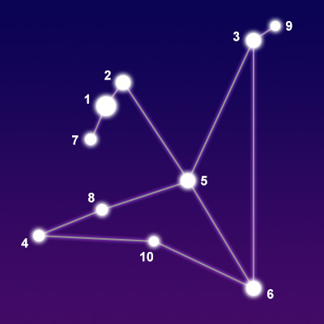

Акила - это созвездие на небесном экваторе. Его название на латыни означает «орел» и представляет собой птицу, которая несла молнии Зевса / Юпитера в греко-римской мифологии. Это созвездие можно найти в группе Млечного Пути с Альтаиром в качестве самой заметной звезды. В конце лета вам нужно взглянуть на южное небо, прилегающее к полосе Млечного Пути, чтобы увидеть это созвездие.
Большой Пес - созвездие в южном небесном полушарии. Этот должен представлять Laelaps, греческий клык. Он был перемещен небесами Зевсом и был одной из охотничьих собак Ориона. В этом созвездии есть Сириус, самая яркая звезда на ночном небе. Появление этого созвездия указывает на собачьи дни лета. Оно почти похоже на фигурку, когда вы замечаете это.
Кассиопея - это созвездие на северном небе, и она была женой царя Цефея Эфиопского и матерью принцессы Андромеды. Предполагается, что Кассиопея - королева, которая была тщеславна и хвасталась своей красотой. Она была вынуждена в царство неба из-за ее хвастовства о красоте ее дочери. Это созвездие легко узнаваемо благодаря своей характерной форме буквы W, образованной пятью яркими звездами.
Лебедь - северное созвездие, лежащее на плоскости Млечного Пути, получившее свое название от латинизированного греческого слова «лебедь». Из-за его горя по поводу смерти его брата и его скорби, боги, как предполагается, сделали его в созвездии. Хвост или верхняя часть этого креста - одна из самых ярких в Млечном Пути.
Лира представляет собой небольшое созвездие и видна из северного полушария. Как видно из названия, это связано с музыкой и мифологическим музыкантом Орфеем, который выбросил свою лиру, когда умерла его жена. Лира была возвращена, и она нашла свое место в небе. Созвездие образует слегка односторонний квадрат, но его легко найти благодаря хвостовой звезде Вега, которая является одной из самых ярких звезд.
Орион - это видное созвездие, расположенное на небесном экваторе. Он представляет великого охотника, который был потомком Посейдона. Легенда предполагает, что он был либо убит Артемидой, либо укусом скорпиона. Это созвездие не только легко найти, но и помогает вам обнаружить других, таких как Сириус, Альдебаран, Процион и т.д., расширяя линию Пояса на юго-восток.
Они расположены между Водолеем на западе и Овном на востоке. Две рыбы, представляющие сына Эроса и Афродиту, мать, которая превратилась в рыбу, чтобы спастись от Тифона. Это в форме огромного V с правой стороной, имеющей o в конце. Созвездие Рыб также связано с немецкой легендой об Антенте, которая владела только ванной и грубой хижиной, когда он встретил волшебную рыбу.
392/5000 Он расположен между Весами на западе и Стрельцом на востоке. Это большое созвездие, расположенное в южном полушарии недалеко от центра Млечного пути. Множество мифов окружают его, один из них заключается в том, что скорпион был тем, с кем Орион столкнулся и не смог победить. Битва подняла скорпиона в небо. Как видно из рисунка, этот легко заметить.
Большая Медведица, также известная как Большой Медведь, прежде всего известна по созвездиям ее основных семи относительно ярких звезд, включающих в себя «Большую Медведицу», «Вагон», «Чарльз Уэйн» или «Плуг» (среди прочих), с его звездной конфигурацией, имитирующая форму «Маленькой Медведицы». Один из наиболее узнаваемых паттернов, его почти всегда можно увидеть в северном полушарии и имеет большое значение во многих мифах.
Малая Медведица, также известная как Маленький Медведь, - созвездие Северного Неба. Оно известно тем, что в нем есть Поларис, Северная звезда. В вавилонских звездных каталогах Малую Медведицу называли «Небесной повозкой», также связанной с богиней Дамкиной.
Созвездие Близнецов, близнецов, видно в северном полушарии с ноября по апрель. Его можно увидеть на широтах от 90 до -60 градусов. Близнецы - одно из 48 созвездий, впервые каталогизированных греческим астрономом Птолемеем во втором веке. Его название означает «близнецы» на латыни. На нем изображены близнецы Кастор и Поллукс, два греческих героя, которые были среди людей, которых Джейсон вел во время своих путешествий по Арго. Согласно мифу, они были на самом деле сводными братьями, а не близнецами. У них была одна и та же мать, Леда, но у них были разные отцы. Отец Кастора был царем Спарты по имени Тындарей, а отцом Поллукса был сам Зевс. В вавилонские времена звезды Кастор и Поллус были известны как Великие близнецы. Их называли Мешламтея и Лугалирра, что означало «Тот, кто восстал из подземного мира» и «Могучий король».